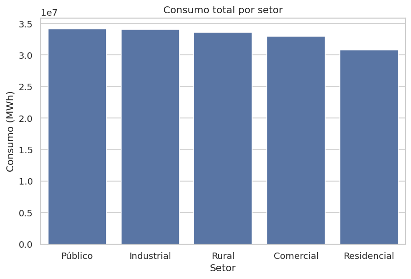
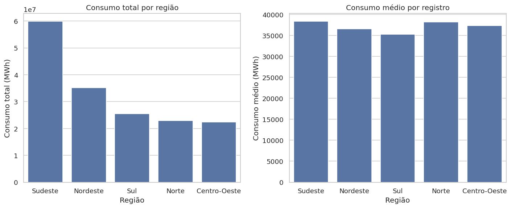
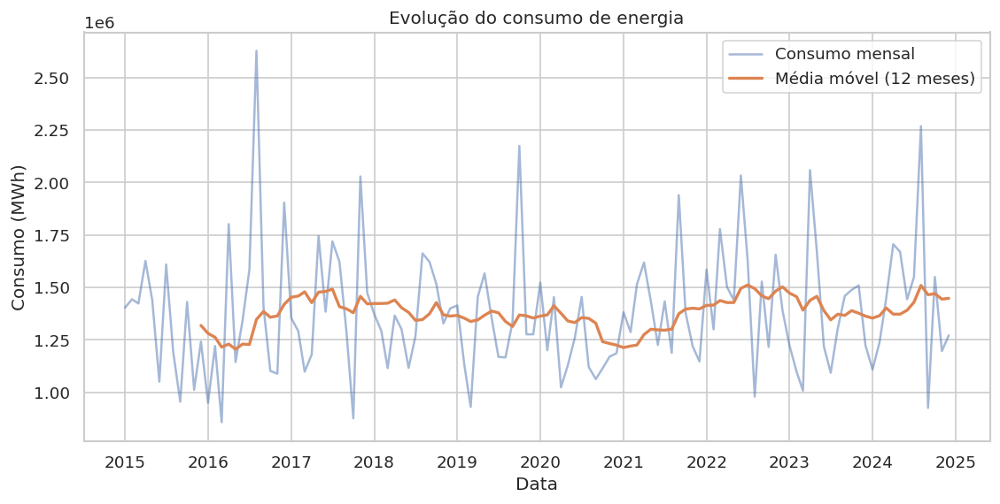
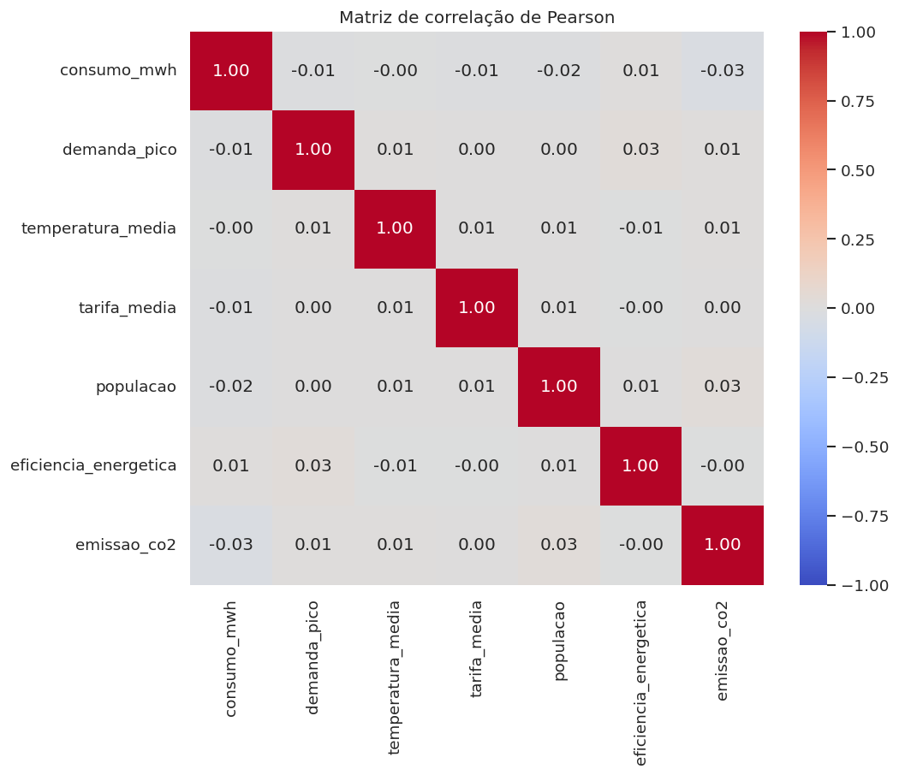

Sobre o projeto
Este projeto analisa o consumo de energia elétrica no Brasil por região, estado e setor, considerando evolução temporal, sazonalidade, emissões de CO₂, eficiência energética e relações estatísticas entre as variáveis.
A base é uma simulação com 4.440 registros mensais, de janeiro de 2015 a dezembro de 2024. O fluxo inclui preparação dos dados, análise exploratória, indicadores, dashboard interativo e publicação online.
Perguntas de negócio
- Qual é o consumo total e como ele se distribui entre setores e regiões?
- Quais estados concentram maior consumo?
- Como o consumo evolui ao longo dos anos e dos meses?
- O consumo se relaciona com temperatura, tarifa, população e emissões?
Indicadores analisados
Principais resultados




Tecnologias utilizadas
Funcionalidades
Intermediárias: filtros múltiplos, KPIs dinâmicos, análise temporal, dashboard em seções e visualizações comparativas.
Avançadas: persistência em banco (SQLAlchemy + SQLite), correlação estatística e séries temporais avançadas.
Arquivos do projeto
Dashboard interativo
Desenvolvido com Streamlit, permite filtrar por região, setor, nível de demanda e período, com KPIs, gráficos, tabelas e conclusão executiva.
Conclusão
O consumo é equilibrado entre os setores, com o Sudeste liderando por volume de registros. A série anual mostra queda em 2020 e recuperação nos anos seguintes. Como a base é simulada, não há correlação linear relevante entre as variáveis; o projeto demonstra a metodologia completa, que pode ser aplicada a dados reais.